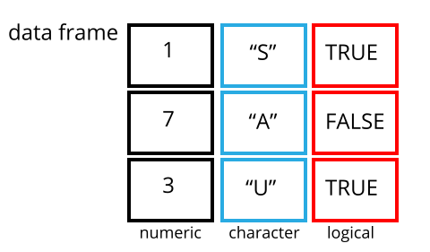

```{r setup, include=FALSE} knitr::opts_chunk$set(echo = TRUE)
# Acknowledgements
This tutorial is heavily based on and influenced by the excellent R for Social Scientists Data Carpentry Workshop, available [https://datacarpentry.org/r-socialsci/00-intro/index.html](here)
# Setup
**[https://datacarpentry.org/r-socialsci/setup.html](Data Carpentry Setup Information)**
## R and R Studio
R is an open source scripted programming language targeted at statistical analysis. It includes graphics capabilities and tools for data analysis and reading and writing data to and from files. [https://datacarpentry.org/r-socialsci/00-intro/index.html](Source)
RStudio is an Integrated Development Environment (IDE) which is designed around making the R program more easily accessible. The RStudio IDE open-source product is free under the Affero General Public License (AGPL) v3.
The R Studio interface is broken into three parts, the top left corner is reserved for editing scripts and RMarkdown files. The right side has your environment, which is for variables. The bottom right is for packages and help. And the bottom left is your Console where you can enter commands to R directly.
## Getting Started
It's best to organize things into a specific working directory, or project folder. We'll do so by creating a new project for this tutorial.
* Under the `File` menu, click on `New project`, choose `New directory`, then `New project`
* Enter a name for this new folder (or “directory”), and choose a convenient location for it. This will be your working directory for the rest of the day (e.g., `~/textmining`)
* Click on `Create project`
* Create a new file where we will type our scripts. Go to File > New File > R Markdown Click the save icon on your toolbar and save your script as “`textmining.Rmd`”.
## R Markdown Files
R Markdown files are a kind of notebook, where you can have "chunks" of R Code that can be run in steps. This is useful for separating notes and words out from your code, preventing all of your code from running together, and you can create reports from them.
Detailed Cheatsheets can be found here: [http://rstudio.com/cheatsheets](http://rstudio.com/cheatsheets)
R Markdowns contain three important types of content:
1. An (optional) YAML header surrounded by ---
2. Chunks of R code surrounded by ```{r}
3. Text mixed with simple text formatting like `# heading` and `_italics_`.
> ---
> title: "Diamond sizes"
> date: 2016-08-25
> output: html_document
> ---
>
> ```{r setup, include = FALSE}
> library(ggplot2)
> library(dplyr)
>
> smaller <- diamonds %>%
> filter(carat <= 2.5)
> ```
>
> We have data about `r nrow(diamonds)` diamonds. Only
> `r nrow(diamonds) - nrow(smaller)` are larger than
> 2.5 carats. The distribution of the remainder is shown
> below:
>
> ```{r, echo = FALSE}
> smaller %>%
> ggplot(aes(carat)) +
> geom_freqpoly(binwidth = 0.01)
> ```
### Creating Chunks
Chunks are important to understand for this. Youc an use the Insert button at the top right of the main window (it has a green C and Insert dropdown) or use control + alt + i to insert a chunk, like so:
```{r}
# empty chunk
Each chunk has alittle green arrow at the right which lets you run the code it contains, but you can also do so by highlighting code and using control + enter
In a chunk, you can install packages with the install.packages() function
# install.packages("tidyverse")
You can do simple math with R, try it in the console:
3+5
12/7
Objects are variables that we assign meaning to. R uses <- to assign values. It can assign numbers, characters and words, true and false values, and collections of these such as vectors, matrices, and arrays. These can be important for types of analysis.
weight_lbs <- 5.0
weight_kgs <- weight_lbs * 2.205
weight_lbs
weight_kgs
A vector is the most common and basic data type in R, and is pretty much the workhorse of R. A vector is composed by a series of values, which can be either numbers or characters. We can assign a series of values to a vector using the c() function.
no_membrs <- c(3, 7, 10, 6)
no_membrs
respondent_wall_type <- c("muddaub", "burntbricks", "sunbricks")
respondent_wall_type
length(no_membrs)
length(respondent_wall_type)
class(no_membrs)
class(respondent_wall_type)
str(no_membrs)
str(respondent_wall_type)
We can extract specific values from a vector like so:
respondent_wall_type
respondent_wall_type[2]
respondent_wall_type[c(3, 2)]
no_membrs
no_membrs[c(TRUE, FALSE, TRUE, TRUE)]
Or
possessions <- c("car", "bicycle", "radio", "television", "mobile_phone")
possessions[possessions == "car" | possessions == "bicycle"] # returns both car and bicycle
possessions %in% c("car", "bicycle", "motorcycle", "truck", "boat") # returns logical TRUE or FALSE for each item
possessions[possessions %in% c("car", "bicycle", "motorcycle", "truck", "boat")] # Returns the ones that posessions contains
Missing data shows up as NA values and you’ll need to learn about things like is.na(), na.omit(), and complete.cases() to fully deal with them. For example:
rooms <- c(2, 1, 1, NA, 4)
mean(rooms) # fails because NA
mean(rooms, na.rm = TRUE)
mean(rooms[!is.na(rooms)])
For our purpose we’re going to focus on what a dataset typically is assign as: a data.frame. A data.frame is how R handles things like CSV or excel files (or most other data files for that matter) where you have rows of observations and columns of variables of one type.

library(tidyverse)
interviews <- read_csv("https://ndownloader.figshare.com/files/11492171", na = "NULL")
head(interviews)
typeof(interviews)
head(str(interviews))
You can get specific values with positions:
interviews[1, 1] # this gets the value at the first row and first column position
interviews[1:3, 4:7] # gets rows 1 through 3 and columns 4 through 7
dplyr, a popular subsetting package, has good tools for this as well:
library(dplyr)
head(select(interviews, village, years_liv))
head(filter(interviews, years_liv > 10))
Factors are categorical or ordinal data. Here’s an example of ordered factor
credit_rating <- c("AAA", "AA", "A", "BBB", "AA", "BBB", "A")
credit_factor_ordered <- factor(credit_rating, ordered = TRUE,
levels = c("AAA", "AA", "A", "BBB"))
plot(credit_factor_ordered)
The modern methods for subsetting and manipulating data are via the dplyr() and tidyverse() packages.
Tidyverse is what allows us to create tibbles (tidy data frames) that mostly differ in that they print nicely and they can’t have rownames. Tibbles are the basis for a lot of tidy data manipulation, though.
Dplyr lets us use powerful manipulation commands and pipe (or chain) these commands together:
select(): subset columnsfilter(): subset rows on conditionsmutate(): create new columns by using information from other columnsgroup_by() and summarize(): create summary statistics on grouped dataarrange(): sort resultscount(): count discrete valuesinterviews %>%
select(-interview_date) %>%
filter(respondent_wall_type == "burntbricks") %>%
summarise(average_years = mean(years_liv))
head(interviews)
interviews2 <- interviews %>%
mutate(mem_by_years = no_membrs * years_liv)
head(interviews2)
Ggplot is the more modern way to graph with R. It’s flexible and makes plots modular, in that you can add geometry on top of data. Ggplot stands for the “grammar of graphics.” The general steps are
library(ggplot2)
str(mpg)
?mpg
Let’s look at displaced gas and highway miles
ggplot(mpg, aes(displ, hwy, colour = class)) +
geom_point()
library(ggthemes)
ggplot(mpg, aes(displ, hwy)) +
geom_point(aes(colour = manufacturer)) +
geom_smooth(method="lm", se = FALSE) +
facet_wrap(~class) +
theme_light() +
ggtitle("Miles per Gallon by Manufacturer per Car Type") +
xlab("Highway Miles") +
ylab("Gallons of Gas")